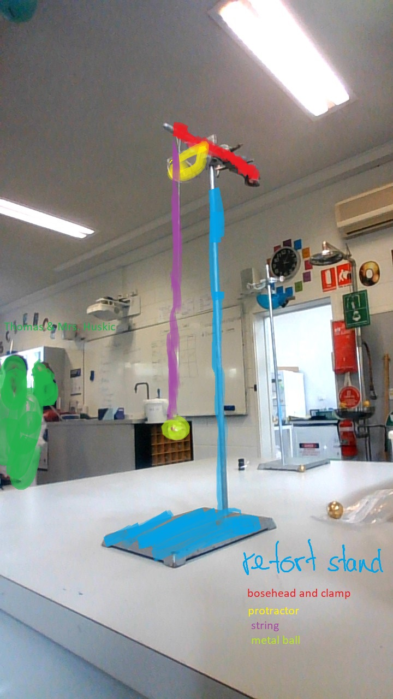
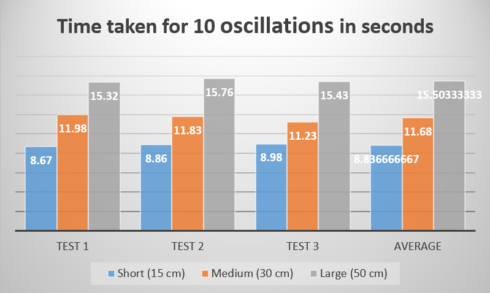
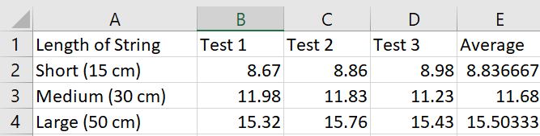

Pendulum Investigation
Brandon Zhou & Jerry
AIM
To investigate the effects of the length of string on the period of 10 oscillations with a Retort Stand + String setup.
Hypothesis
My hypothesis is that the shorter the string is, the quicker the pendulum would swing and finish swinging due to the smaller distance the ball would need to travel.
Materials
- Retort Stand
- Bose Head
- Clamp
- String
- Blue Tack
- Small Metal Ball
Method
- Change length of string and measure length (short/medium/long).
- Hold ball stretched from string at a 90° angle.
- Start stopwatch and let go of the ball simultaneously without pushing the ball downwards.
- Record the time taken for 10 oscillations.
- Repeat Step 3 and 4 twice more.
Diagram

Results


Discussion Questions
- How does the length of the pendulum affect its period?
The effect of the length of string was that the shorter the string was, the shorter the oscillations were.
- Why is it a good idea to measure the time for 10 swings rather than just one?
Measuring 10 swings was a good idea so the time could be more evened out, rather than just the original swing.
- What variables must be kept constant when determining the effect of a push/mass/length on the period of a pendulum?
The weight of the ball and the angle the ball was get go from had to be controlled.
- In your experiment, what was the;
- Independent variable?
The length of string used
- Dependent variable?
The time taken for 10 swings
- In this experiment, you were required to repeat each measurement three times. When you do this, the time taken for 10 swings is not always the same.
- Suggest two or more reasons for this.
- The measurements were for 10 swings because it would reduce the effects human error would on the measurement.
- One swing would vary across tests, but 10 swings would be more evened out.
- Suggest why the differences between measurements are usually greater for shorter pendulums.
I believe the reason that measurements for shorter lengths of string would fluctuate is that human imperfection would have more of an impact of the result.
Conclusion
Stuff